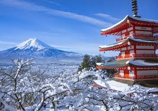
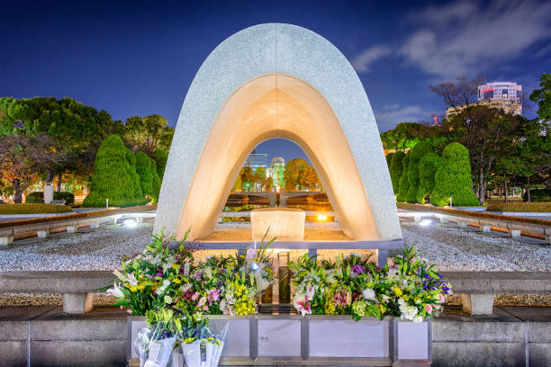
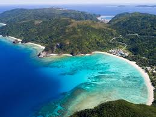

About Japan
Japan is an island nation located in East Asia, known for its unique blend of traditional and modern culture. From ancient temples and shrines to futuristic skyscrapers, Japan offers a diverse range of experiences for travelers. The country's rich history, delicious cuisine, and stunning natural landscapes make it a must-visit destination.
Top Attractions
- Tokyo
- Kyoto
- Mount Fuji
- Hiroshima Peace Memorial Park
- Okinawa

The bustling capital city, known for its skyscrapers, shopping districts, and vibrant nightlife.

Famous for its historic temples, traditional wooden houses, and beautiful gardens.

Japan's iconic peak, offering stunning views and hiking opportunities.

A poignant reminder of the atomic bombing, featuring memorials and museums.

A tropical paradise known for its beautiful beaches and unique culture.